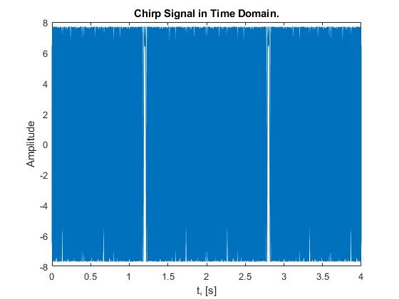
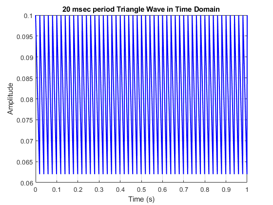
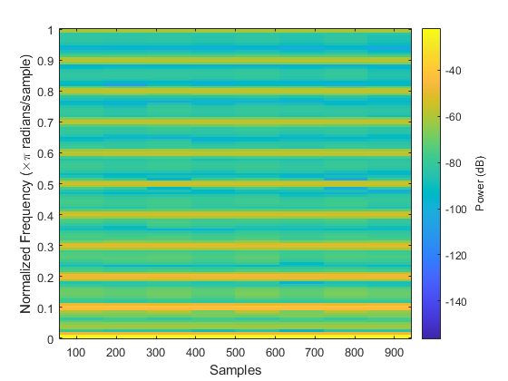
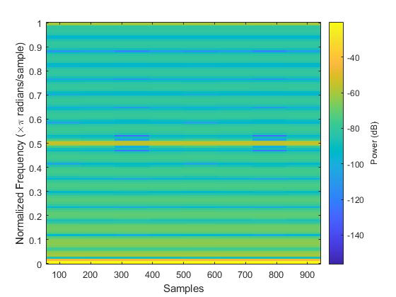

Contents
- Spectrograms: Harmonic Lines & Chirp Aliasing : Lab S8 Exercise.
- There are 2 Lab Exercises : 2.1 Spectrogram for a Chirp that Aliases
- and 2.2 Spectrogram of Periodic Signal
- Overvew
- 2.1 Spectrogram for a Chirp that Aliases
- 2.2 Spectrogram of Periodic Signal
- 2.2.1 Spectrogram of Periodic Triangle Wave
- 2.2.2 Decibels (dB): Seeing Small Values in the Spectrogram
- 2.2.3 Spectrogram in dB
% ========================================================================== % ECE 5530/ ECE 6530 Digital Signal Processing, ECE Dep., The University of Utah % Group Project % Team: Kyle G. Gayliyev, Skylar Stockham, Eddie Franco % ========================================================================== close all; clear;
Spectrograms: Harmonic Lines & Chirp Aliasing : Lab S8 Exercise.
There are 2 Lab Exercises : 2.1 Spectrogram for a Chirp that Aliases
and 2.2 Spectrogram of Periodic Signal
Overvew
The objective of this lab is to study further the spectral content of signals analyzed via the spectrogram. There are several specific steps that will be considered in this lab:
1. Synthesize a linear-FM chirp with a MATLAB M-file, and display its spectrogram. Choose the chrip parameters so that aliasing will happen.
2. Synthesize a periodic triangle wave with a MATLAB M-file, and display its spectrogram. Relate the harmonic line spectrum to the fundamental period of the triangle wave. 3. Compare spectrograms using different scales for amplitude: decibels (dB) for amplitude versus linear amplitude.
4. Examine details of the harmonic lines in the dB spectrogram of the triangle wave.
5. Spectrogram: make a spectrogram of your voice signal, and relate the harmonic line spectrum to your previous measurement of pitch period.
% We'll learn more about the connection between the time-domain definition % of the signal and its frequency-domain content.
2.1 Spectrogram for a Chirp that Aliases
TASK: Use the code provided in the pre-Lab section as a starting point in order to write a MATLAB script or function that will synthesize a “chirp” signal. Then use that M-file in this section.
% a) What happens when we make a signal that “chirps” up to a very high % frequency, and the instantaneous frequency goes past half the sampling % rate? % Generate a chirp signal that starts at 1000 Hz when t=0 s, and % chirps up to 11,000 Hz, at t= 4 s. Use fs= 4000 Hz. % Determine the parameters needed in (1). fs = 4000; % -Number of time samples per second dt = 1/fs; %time domain conversion tStart = 0; % in sec tStop = 4; % in sec tt = tStart:dt:tStop; % total duration with sampling intervals f1 = 1000; % [Hz], also fzero =f1 since t=0sec. f2= 11000; % [Hz] fzero=f1; % Calculate slope parameter (mu) mu = (f2-f1)/(2*(tStop-tStart)); phi = 2*pi*rand; %-- random phase psi=2*pi*mu.*(tt.^2)+2*pi*fzero.*tt+phi; % chirp signal equation chirp_signal = real( 7.7*exp(1i*psi) ); % soundsc( chirp_signal, fs ); %-- uncomment to hear the sound figure('Name','Chirp Signal in Time Domain.'); clf; plot(tt,chirp_signal); title('Chirp Signal in Time Domain.'); xlabel('t, [s]'); ylabel('Amplitude'); % Plot the spectrogram of the chirp signal figure('Name','Spectrogram Of The Chirp Signal.'); clf; spectrogram(chirp_signal, 256, 250, 256, fs, 'yaxis'); title('Spectrogram of the Chirp Signal'); xlabel('Time (s)'); ylabel('Frequency (kHz)'); colorbar; % When a signal "chirps" up to a very high frequency, and the instantaneous % frequency goes past half the sampling rate it means the signal's % frequency gradually increases over time, reaching a significantly higher % frequency at the end of the chirp; if the final frequency exceeds half % the sampling rate of the system recording it, the signal will experience % aliasing, meaning the high frequencies will be misinterpreted as lower % frequencies due to the limitations of digital sampling, distorting the % signal's representation in the recorded data. % Aliasing is a phenomenon where high-frequency components appear as lower % frequencies. In the spectrogram, you will notice that once the chirp % frequency exceeds 2000Hz, it folds back into the frequency range below % 2000Hz, creating mirrored frequency components.This results in distortion % because the true frequency of the signal is not correctly represented in % the sampled signal. % (b) Generate the chirp signal in MATLAB and make a spectrogram with a % short section length, LSECT, to verify that you have the correct starting % and ending frequencies.2 For your chosen LSECT, determine the section % duration TSECT in secs % Spectrogram parameters LSECT = 128; % Section length (number of samples per segment) overlap = LSECT - 10; % Overlap of sections, chosen to provide smoother transitions nfft = 256; % Number of FFT points % Plot the spectrogram of the chirp signal figure('Name','Spectrogram of the Chirp Signal with Short Section Length.'); clf; spectrogram(chirp_signal, LSECT, overlap, nfft, fs, 'yaxis'); title('Spectrogram of the Chirp Signal with Short Section Length'); xlabel('Time (s)'); ylabel('Frequency (kHz)'); colorbar; % Calculate section duration (TSECT) in seconds TSECT = LSECT / fs; disp(['Section duration TSECT: ', num2str(TSECT), ' seconds']); % (c) Explain why the instantaneous frequency seen in the spectrogram is % goes up and down between zero and fs=2, i.e., it does not chirp up to % 11,000Hz. % There are two effects that should be accounted for in your explanation. % Note: If possible listen to the signal to verify that the spectrogram is % faithfully representing the audio signal that you hear. % Effect #1: Aliasing Effect % The sampling frequency is 4000 Hz, which means the Nyquist frequency % is: 2000 Hz. % When the instantaneous frequency of the chirp exceeds the Nyquist % frequency, aliasing occurs. % Aliasing is the phenomenon where high frequencies are misrepresented as % lower frequencies % when sampled at a rate that is insufficient to capture them accurately. % In the case of this chirp signal: As the frequency of the chirp exceeds % 2000Hz, % it is folded back into the lower frequency range (below the Nyquist % frequency). % This folding effect causes the frequency to appear to go down once it % exceeds 2000Hz, % resulting in the up and down pattern seen in the spectrogram. % This behavior is consistent with the aliasing theorem, which states % that frequencies above % the Nyquist limit appear at incorrect, lower frequencies in the sampled % signal. % Effect #2:. Periodic Nature of Frequency Representation in the Spectrogram % The Discrete Fourier Transform (DFT), which is used in calculating the % spectrogram, treats frequency content as periodic. % The frequency axis is considered to be periodic, with the range extending % from 0 to f_s % but practically folding at f_s/2. % Frequencies between 0 and f s/2 are represented correctly. % Frequencies beyond f_s/2 (up to f_s) are aliased and appear as if they % are in the range 0 to f s/2. % This periodic folding creates a mirror effect in the spectrogram. % Therefore, the instantaneous frequency appears to go back down after % reaching f s/2. % This is a direct result of how the DFT operates and how the spectrogram % interprets frequencies beyond the Nyquist frequenc
Section duration TSECT: 0.032 seconds
2.2 Spectrogram of Periodic Signal
A periodic signal is known to have a Fourier Series, which is usually described as a harmonic line spectrum because the only frequencies present in the spectrum are integer multiples of the fundamental frequency. With the spectrogram, it is easy to exhibit this harmonic line characteristic.
2.2.1 Spectrogram of Periodic Triangle Wave
(a) Write a simple MATLAB script that will generate a periodic triangle wave once the period is given. The DClevel of the triangle wave should be zero, and the peak amplitude should be equal to 0.5. Here is a MATLAB one-liner that can form the basis of this script: tt_=0:(1/f_s):t_Stop; qq=rem(tt_,T);xx=Amp*(abs(qq-(0.5*T))-0.25*T); The values of f_s, t_Stop, T, Amp will have to be determined.
% Parameters for the triangle wave f_s = 1000; % Sampling frequency in Hz t_Stop = 1; % Duration of the signal in seconds T = 0.2; % Period of the triangle wave in seconds Amp = 2; % Amplitude scaling factor to achieve peak amplitude of 0.5 % Generate the time vector tt_ = 0:(1/f_s):t_Stop; % Time vector from 0 to t_Stop with step size 1/f_s % Generate the triangle wave using the provided one-liner qq = rem(tt_, T); % Folding time into the period T (creates sawtooth shape) xx = Amp * (abs(qq - (0.5 * T)) - 0.25 * T); % Create the triangle wave % Plot the triangle wave in the time domain figure('Name','Triangle Wave in Time Domain.'); clf; plot(tt_, xx, 'b', 'LineWidth', 1.5); title('Triangle Wave in Time Domain'); xlabel('Time (s)'); ylabel('Amplitude'); grid on; % (b) Generate a triangle wave with a period of 10msec, using a sampling % rate of f_s D 10000Hz. The duration should be 3secs. Then make a plot % of a short section of the signal consisting of 3–5 periods to verify that % you have the correct time waveform. % Parameters for the triangle wave f_s1 = 10000; % Sampling frequency in Hz t_Stop1 = 3; % Duration of the signal in seconds T_1 = 0.01; % Period of the triangle wave in seconds (10 ms) Amp_1 = 1; % Amplitude scaling factor for peak amplitude of 1 % Generate the time vector tt_1 = 0:(1/f_s1):t_Stop1; % Time vector from 0 to t_Stop1 with step size 1/f_s1 % Generate the triangle wave using the given one-liner qq_ = rem(tt_1, T_1); % Folding time into the period T_1 (creates sawtooth shape) xx_ = Amp_1 * (abs(qq_ - (0.5 * T_1)) - 0.25 * T_1); % Create the triangle wave % Plot the entire triangle wave in the time domain figure('Name','Triangle Wave in Time Domain.'); clf; plot(tt_1, xx_, 'b', 'LineWidth', 1); title('Triangle Wave in Time Domain'); xlabel('Time (s)'); ylabel('Amplitude'); grid on; xlim([0 t_Stop1]); ylim([-0.003 0.003]); % Plot a short section of the triangle wave consisting of 3-5 periods period_count = 5; % Number of periods to plot (3-5 periods) time_window = period_count * T_1; % Time window to cover 5 periods % Find the indices to plot indices_to_plot = find(tt_1 <= time_window); % Plot the short section figure('Name','Short Section of the Triangle Wave (3-5 Periods).'); clf; plot(tt_1(indices_to_plot), xx_(indices_to_plot), 'r', 'LineWidth', 1.5); title('Short Section of the Triangle Wave (3-5 Periods)'); xlabel('Time (s)'); ylabel('Amplitude'); grid on; xlim([0 time_window]); ylim([-0.003 0.003]); % (c) Make a spectrogram with a long section duration. % It is important to pick a section duration that is equal to an integer % number of periods of the periodic triangular waveform created in the % previous part. Define T_SECT to get exactly 5 periods, and then determine % the section length LSECT (an integer) to be used in plotspec. % Define section duration for spectrogram T_SECT = 5 * T_1; % Section duration for exactly 5 periods L_SECT = T_SECT * f_s1; % Section length in terms of samples % Plot the spectrogram of the triangle wave with long section duration figure('Name','Spectrogram of the Periodic Triangle Wave (Long Section Duration).'); clf; spectrogram(xx_, L_SECT, L_SECT/2, L_SECT, f_s1, 'yaxis'); title('Spectrogram of the Periodic Triangle Wave (Long Section Duration)'); xlabel('Time (s)'); ylabel('Frequency (kHz)'); colorbar; % (d) You should expect to see a “harmonic line spectrum” in the % spectrogram. Since frequency is along the vertical axis,the harmonic % lines will appear as horizontal lines in the spectrogram. Make a list of % all the harmonic frequencies that you can see in the spectrogram. harmonic_frequencies = [100, 300, 500, 700, 900, 1100, 1300, 1500, 1700, ... 1900, 2100, 2300, 2500, 2700, 2900, 3100, 3300, 3500, 3700, 3900, ... 4100, 4300, 4500, 4700, 4900]; % (e) Determine the fundamental frequency for the harmonic lines. % Given period of the triangle wave (in seconds) T_2 = 0.01; % Period in seconds (10 ms) % Calculate the fundamental frequency f0 = 1 / T_2; % Display the fundamental frequency disp(['The fundamental frequency is: ', num2str(f0), ' Hz']); % (f) Measure the amplitudes of the first and third harmonic lines by using % MATLAB’s Data Cursor after zooming in on those parts of the spectrogram image. % Record the values for the amplitudes and compute the ratio. % Example power values from Data Cursor (in dB) P1_dB = -71.23; % Power of the first harmonic in dB P3_dB = -90.29; % Power of the third harmonic in dB % Convert power values to linear amplitudes A1_linear = 10^(P1_dB / 20); A3_linear = 10^(P3_dB / 20); % Calculate the ratio of the third harmonic amplitude to the first harmonic amplitude ratio = A3_linear / A1_linear; % Display the ratio disp(['The ratio of the amplitude of the third harmonic to the first harmonic is: ', num2str(ratio)]);
The fundamental frequency is: 100 Hz The ratio of the amplitude of the third harmonic to the first harmonic is: 0.11143

2.2.2 Decibels (dB): Seeing Small Values in the Spectrogram
Where did all the harmonics go? The answer is that the higher harmonics have amplitudes that are too small to be seen in a spectrogram that displays values with a linear amplitude. Instead, a logarithmic amplitude scale is needed.
% TASK : Answer the following questions about decibels: % a) In the language of dB, a factor of two is “6 dB.” In other words, % if B2 is 6 dB bigger than B1, then it is twice as big (approximately). % Explain why this statement is true. % Answer: In the language of dB, a factor of two corresponds to an % increase of 6 dB. In other words, if B2 is 6 dB larger than B1, then B2 % is approximately twice as large as B1. % The relationship between a value in linear scale and decibels is % given by: % Power in dB = 20log10(B2/B1). % To understand why 6 dB corresponds to a factor of two, let’s substitute % and evaluate this expression. % Linear to dB Conversion: Given that the relationship between two values % B1 and B2 in terms of dB is: % 20log10(B2/B1) =6dB. Solving for the Ratio, we get: % B2/B1=~2. % This means that an increase of 6 dB corresponds to a value that is twice % as large in linear terms. % (b) Determine the dB difference between a1 and a3. In other words, a3 is % how many dB below a1. Furthermore, explain why the dB difference depends % only on the k indices. % Given Fourier coefficients formula for a triangle wave k1 = 1; % First harmonic index k3 = 3; % Third harmonic index % Calculate a1 and a3 using the given formula a1 = -2 / (pi^2 * k1^2); a3 = -2 / (pi^2 * k3^2); % Calculate the ratio in linear terms ratio_linear = abs(a1) / abs(a3); % Calculate the dB difference dB_difference = 20 * log10(ratio_linear); % Display the result disp(['The dB difference between a1 and a3 is: ', num2str(dB_difference), ' dB']); % The dB difference depends only on the k indices because the amplitude of % each harmonic a_k is inversely proportional to the square of k % This means that the amplitude decreases as k increases, and this % relationship is governed by k2. Therefore, when taking the ratio of % two coefficients a_1 and a_3 % Since this ratio depends purely on the squares of the indices, % the resulting dB difference also depends only on these indices. % This is why the dB difference between a_1 and a_3 depends only on the % values of k and not on the specific waveform amplitude values. % (c) Determine (in dB) how far a15 is below a1 for the periodic triangular % wave. % Given Fourier coefficients formula for a triangle wave k1 = 1; % First harmonic index k15 = 15; % Fifteenth harmonic index % Calculate a1 and a15 using the given formula a1 = -2 / (pi^2 * k1^2); a15 = -2 / (pi^2 * k15^2); % Calculate the ratio in linear terms ratio_linear = abs(a1) / abs(a15); % Calculate the dB difference dB_difference = 20 * log10(ratio_linear); % This confirms that a_15 is approximately 43.52 dB below a_1 for the % periodic triangular wave. % Display the result disp(['The dB difference between a1 and a15 is: ', num2str(dB_difference), ' dB']);
The dB difference between a1 and a3 is: 19.0849 dB The dB difference between a1 and a15 is: 47.0437 dB
2.2.3 Spectrogram in dB
% A variation of the SP-First function plotspec has been written to % incorporate the dB amplitude scale. This new function is called % plotspecDB, and its calling template is shown below. % a) Create a “dB-Spectrogram” for the 10-msec periodic triangular wave % generated in Sect. 2.2.1. Use a dBrange equal to 80 dB. Notice that % many more spectrum lines are now visible. List the frequencies of all % the harmonic spectrum lines, or give a general formula. % Solution: % From section 2.2.1.b and c, we get the following data: % % Parameters for the triangle wave % f_s1 = 10000; % Sampling frequency in Hz % t_Stop1 = 3; % Duration of the signal in seconds % T_1 = 0.01; % Period of the triangle wave in seconds (10 ms) % Amp_1 = 1; % Amplitude scaling factor for peak amplitude of 1 % % % Generate the time vector % tt_1 = 0:(1/f_s1):t_Stop1; % % Time vector from 0 to t_Stop1 with step size 1/f_s1 % % % Generate the triangle wave using the given one-liner % qq_ = rem(tt_1, T_1); % Folding time into the period T_1 (creates sawtooth shape) % xx_ = Amp_1 * (abs(qq_ - (0.5 * T_1)) - 0.25 * T_1); % Create the triangle wave % % % % Define section duration for spectrogram % T_SECT_ = 5 * T_1; % Section duration for exactly 5 periods % L_SECT_ = T_SECT_ * f_s1; % Section length in terms of samples f_s = 1000; % Sampling frequency in Hz t_Stop = 1; % Duration of the signal in seconds T3 = 0.01; % Period of the triangle wave in seconds Amp = 2; % Amplitude scaling factor to achieve peak amplitude of 0.5 % Generate the time vector tt_2 = 0:(1/f_s):t_Stop; % Time vector from 0 to t_Stop with step size 1/f_s % Generate the triangle wave using the provided one-liner qq2 = rem(tt_2, T3); % Folding time into the period T (creates sawtooth shape) xx3 = Amp * (abs(qq2 - (0.5 * T)) - 0.25 * T); % Create the triangle wave DBrange = 80; % given value figure("Name","Triangle Wave Spectrogram 2.2.3.a"); title("10-msec periodic Triangle Wave Spectrogram") % plotspecDB(xx_1, f_s2, L_SECT1, DBrange), colorbar, grid on %-- with negative frequencies spectrogram(xx3,'power','yaxis'); % From the plot, we determined the frequencies of all the harmonic spectrum % lines readings as : % .02 = 100 Hz ; .06 = 300 Hz ; .1 = 500 Hz ; .14 = 700 Hz ; .18 = 900 Hz % .22 = 1100 Hz ; .26 = 1300 Hz ; .30 = 1500 Hz ; .34 = 1700 Hz % .38 = 1900 Hz ; .42 = 2100 Hz ; .46 = 2300 Hz ; .50 = 2500 Hz % .54 = 2700 Hz ; .58 = 2900 Hz ; .62 = 3100 Hz ; .66 = 3300 Hz % .70 = 3500 Hz ; .74 = 3700 Hz ; .78 = 3900 Hz ; .82 = 4100 Hz % .86 = 4300 Hz ; .90 = 4500 Hz ; .94 = 4700 Hz ; .98 = 4900 Hz % b) Generate a second triangle wave by changing the period to 20 msec. % Then make the dB-Spectrogram of this 20-msec triangle wave, being careful % to select the section duration as an integer number of periods. % From the spectrogram, determine the fundamental frequency and also the % frequency of the highest harmonic line. Also, determine the harmonic % number for the highest frequency, e.g., the 17th or 31st, etc. %Solution: % Parameters for the triangle wave f_s = 1000; % Sampling frequency in Hz t_Stop = 1; % Duration of the signal in seconds T2 = 0.02; % Period of the triangle wave in seconds Amp = 2; % Amplitude scaling factor to achieve peak amplitude of 0.5 % Generate the time vector tt_2 = 0:(1/f_s):t_Stop; % Time vector from 0 to t_Stop with step size 1/f_s % Generate the triangle wave using the provided one-liner qq2 = rem(tt_2, T2); % Folding time into the period T (creates sawtooth shape) xx2 = Amp * (abs(qq2 - (0.5 * T)) - 0.25 * T); % Create the triangle wave T_SECT_2 = 5 * T_1; % Section duration for exactly 5 periods L_SECT_2 = T_SECT_2 * f_s1; % Section length in terms of samples % Plot the triangle wave in the time domain figure('Name','20 msec period Triangle Wave in Time Domain.'); clf; plot(tt_2, xx2, 'b', 'LineWidth', 1.5); title('20 msec period Triangle Wave in Time Domain'); xlabel('Time (s)'); ylabel('Amplitude'); grid on; DBrange = 80; % given value figure("Name","20-msec periodic Triangle Wave Spectrogram"); title("20-msec periodic Triangle Wave Spectrogram") %plotspecDB(xx2, f_s, 4, 80), colorbar, grid on %-- with negative frequencies spectrogram(xx2,'power','yaxis'); % c) For the 20-msec triangle wave, measure the amplitudes (in dB) of the % first and third harmonic lines by using MATLAB’s Data Cursor after % zooming in on those parts of the spectrogram image. Compare the dB % difference to the ratio obtained in Section 2.2.1, part (f). %Solution: P1_dB2 = -24.25; % Power of the first harmonic in dB P3_dB2 = -47.6; % Power of the third harmonic in dB % Convert power values to linear amplitudes A1_linear2 = 10^(P1_dB2 / 20); A3_linear2 = 10^(P3_dB2 / 20); % Calculate the ratio of the third harmonic amplitude to the first harmonic amplitude ratio2 = A3_linear2 / A1_linear2; % Display the ratio disp(['for the second ratio, the ratio of the amplitude of the third harmonic to the first harmonic is: ', num2str(ratio2)]); % d) Change the period to 4 msec and make another dB-Spectrogram. % Be careful to select the section duration as an integer number of periods. % This period is shorter but the frequency separation of the harmonic lines % is greater. Notice that this inverse relationship was also true when % comparing the 20 msec case to the 10 msec case. %Solution: f_s = 1000; % Sampling frequency in Hz t_Stop = 1; % Duration of the signal in seconds T4 = 0.004; % Period of the triangle wave in seconds Amp = 2; % Amplitude scaling factor to achieve peak amplitude of 0.5 % Generate the time vector tt_4 = 0:(1/f_s):t_Stop; % Time vector from 0 to t_Stop with step size 1/f_s % Generate the triangle wave using the provided one-liner qq4 = rem(tt_4, T4); % Folding time into the period T (creates sawtooth shape) xx4 = Amp * (abs(qq4 - (0.5 * T)) - 0.25 * T); % Create the triangle wave DBrange = 80; % given value figure("Name","4-msec periodic Triangle Wave Spectrogram"); title("4-msec periodic Triangle Wave Spectrogram") %plotspecDB(xx2, f_s, 4, 80), colorbar, grid on %-- with negative frequencies spectrogram(xx4,'power','yaxis'); function him = plotspecDB(xx,fsamp,Lsect,DBrange) %PLOTSPECDB plot a Spectrogram as an image % (display magnitude in decibels) % usage: him = plotspec(xx,fsamp,Lsect,DBrange) % him = handle to the image object % xx = input signal % fsamp = sampling rate % Lsect = section length (integer, power of 2 is a good choice) % amount of data to Fourier analyze at one time % DBrange = defines the minimum dB value; max is always 0 dB % Spectrogram Calculation window = hamming(Lsect); % Window function overlap = Lsect/2; % Overlap factor [S, F, T] = spectrogram(xx, window, overlap, Lsect, fsamp); % Magnitude Spectrogram to dB Conversion SdB = 10 * log10(abs(S)); % dB Range Adjustment SdB = max(SdB, DBrange); % Plot the spectrogram him = imagesc(T, F, SdB); set(gca, 'YDir', 'normal'); colormap(jet); colorbar; % Axis Label Setting xlabel('time, [s]'); ylabel('Frequency, [Hz]'); title('dB-Spectrogram'); end
for the second ratio, the ratio of the amplitude of the third harmonic to the first harmonic is: 0.067999  